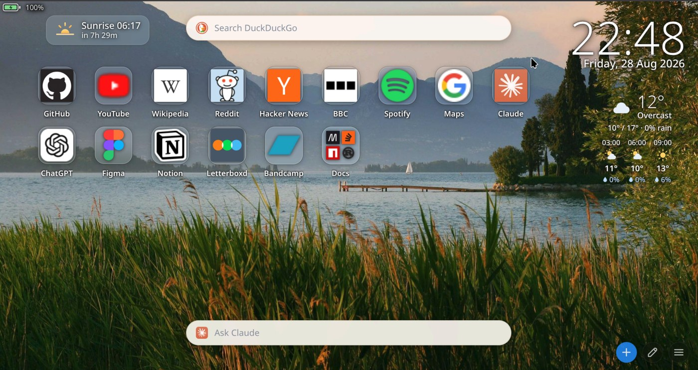
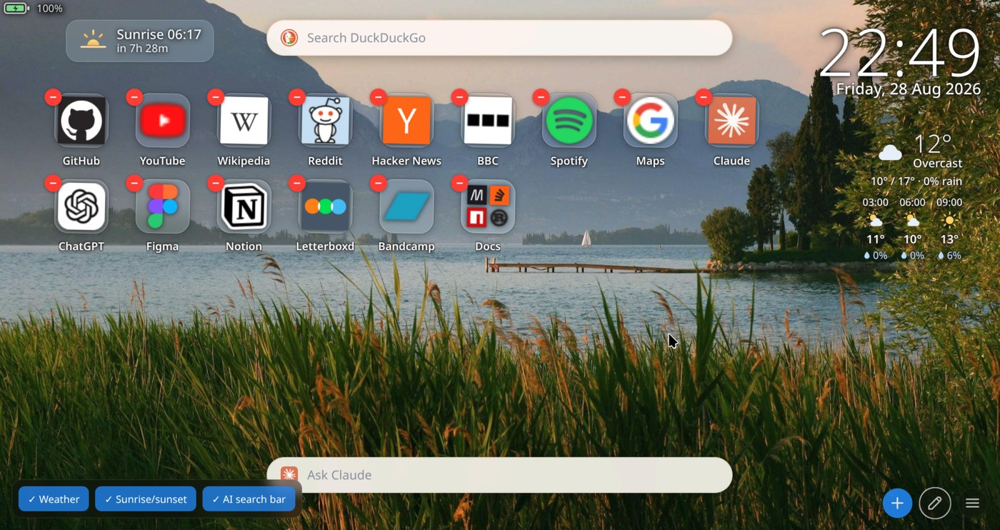
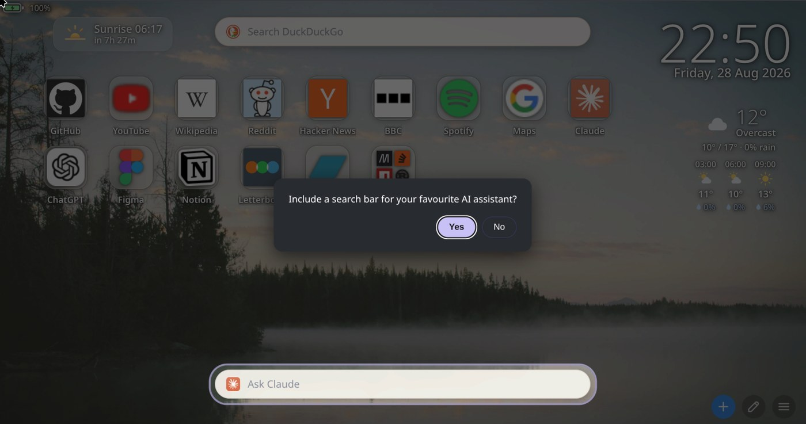

Home Screen replaces the new tab page in Chromium browsers with a grid of shortcuts you add yourself, over a wallpaper picked at random from a local folder. Around the grid are a clock, a weather block, a countdown to the next sunrise or sunset, and a battery readout. A search bar sits at the top and a bar for asking an AI assistant a question sits at the bottom.

The grid
Tiles are added by hand and stay in the order you put them in. Drag one onto another to make a folder; drag into a folder to fill it.
Icons come from a chain: the site's own apple-touch-icon
first, then DuckDuckGo's icon service, then the browser's own favicon
cache, and only then a letter. Whatever it finds is cached as a data URL,
so a site is looked up once.
Uploaded icons are trimmed automatically — transparent margins scanned away with a noise floor, then scaled into a square. The noise floor is there because several downloaded logos carry faint opaque speckles across the whole canvas, which defeats an ordinary trim.

Weather, sun and battery
A weather block, a countdown to the next sunrise or sunset, and a battery readout sit around the grid. Each can be switched off, and a setup wizard asks which ones you want the first time you open a tab. Turning one off removes it rather than hiding it — the forecast is not fetched at all if nothing needs it.
Weather comes from Open-Meteo: no key, no signup, cached for thirty minutes. The location is chosen by name from a search box rather than by asking the browser where you are, which behind a VPN answers wrongly.
The assistant bar
The bar along the bottom takes a question and opens it in Claude, ChatGPT, Google AI Mode, Grok or Perplexity — or any service you give a URL for. It works the way the search bar does: click the icon to change where it goes.
The question is placed in the assistant's composer and you press enter once more to send it. Sites show a warning when a prompt arrives from outside the chat box and require that confirmation, so the extension cannot submit on your behalf.

Profiles
A profile is the whole configuration — tiles, icons, search engine, assistant, which widgets are on, and the weather location — saved under a name and switched from a menu. Profiles are kept in the browser, so there is no folder to choose and nothing to configure before the first save. Export writes one out as JSON when you want a backup or a copy on another machine.
What it talks to
There is no account, no telemetry and no server. Everything is stored in the browser. Three parties are contacted, all directly by your browser and only when there is something to fetch:
| Who | When | What they receive |
|---|---|---|
| The site itself | A tile has no icon cached | A request for its apple-touch-icon.png |
icons.duckduckgo.com | That request failed | The hostname of that site |
open-meteo.com | Weather is switched on | The coordinates you chose |
Build
Three files and no dependencies: an MV3 manifest, one HTML file holding the markup and all the CSS, and one JavaScript file holding all the logic. Nothing to install before editing it, and nothing to run at startup.
It runs on Chromium browsers on Linux, macOS and Windows — Brave, Chrome, Edge, Vivaldi. Firefox and Safari are not supported.
Installing it
It is not on any store. Load it unpacked:
- Clone the repository.
- Open
chrome://extensions, orbrave://extensionsin Brave. - Turn on developer mode, click Load unpacked, and choose the folder.
- Open a new tab.